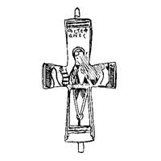

Catalog › CE-0551 · MAR-1
Valvă de encolpion cu un sfânt incizat, Rudnik
sec. IX–XII (801–1200) · Rudnik, muntele Rudnik, Serbia · Muzeul Național Čačak (Народни музеј у Чачку), inv. А 919
single valve of a reliquary cross, bronz; c. IX–XII (801–1200); found at Rudnik, muntele Rudnik, Serbia; kept at Muzeul Național Čačak (Народни музеј у Чачку).


Identificare
- Categorie
- Valvă izolată
- Material
- Bronz
- Tehnică
- Turnare în relief; Gravare (incizie)
- Dimensiuni
- Î 90 × L 58 mm
Iconografie
- Descriere avers
- Cruce latină cu brațele orizontale lărgite; la capetele ambelor brațe verticale câte o ureche a balamalei de închidere. Pe fața păstrată, reprezentarea unui sfânt incizată puțin adânc, cu nimb circular; chipul redat prin câteva incizii simple și destul de deteriorat; mâna dreaptă ridicată în rugăciune, la locul celei stângi o deteriorare; în loc de aripi, mici incizii care ar putea reprezenta vârfuri de aripi. Veșmânt festiv, cu multe detalii; în partea de jos a veșmântului lung (dalmatică) un nod ornamental (poate capetele legate ale unui brâu); sub o bordură de incizii fine pe marginea de jos, în colțuri, picioarele sfântului redate sumar. În dreapta sfântului este incizat un pește simplificat, iar în stânga un atribut nedefinit. Deasupra capului, pe brațul vertical de sus, inscripție cu numele sfântului, în două rânduri.
- Inscripții
- Numele sfântului, în două rânduri (în text «астеф» / «анос»); autoarea îl citește Ștefan
Datare și atribuire
- Datare
- sec. IX–XII (801–1200)
Descoperire
- Localitate
- Rudnik
- Regiune
- muntele Rudnik
- Țară
- Serbia
- Context
- Necunoscut
- Coordonate
- 44.1300° N, 20.5200° E
- Precizia locului
- Doar localitatea
Păstrare și referințe
- Colecție
- Muzeul Național Čačak (Народни музеј у Чачку)
- Nr. inventar
- А 919
- Bibliografie
- О. Марковић, Два енколпиона из Народног музеја у Чачку, în „Зборник радова Народног музеја Чачак”, 19, 1989, p. 59–62 [Марковић 1989], p. 60, Табла I, сл. 1, reprodusă la Табла I, сл. 1 (planșă nenumerotată).
- Figura
- Табла I, сл. 1
- Planșe
- Табла I (nenumerotată)
- Analogii
- Cel mai asemănător ca tehnică și aspect: o cruce cu inscripție și sfânt cu cădelniță și măsură, datată sec. XI–XII (Muzeul Național Belgrad, Табла I, сл. 4; Марјановић-Вујовић, cat. 41); două cruci inedite la Muzeul Kanellopoulos din Atena, cu numele sfinților Ioan și Gheorghe (Табла I, сл. 2 și 3), datate sec. IX–XI.
- Observații
- Piesa provine din Rudnik, fără date despre condițiile descoperirii. Se păstrează o singură față (valvă); în sursă este considerată față. Dimensiuni 9×5,8 cm. Autoarea se îndoiește că atributul din stânga este o cădelniță și propune o cruce cu imaginea unui sfânt și cu două nume, al doilea înlocuit de atribut. Datarea este cea din rezumatul francez pentru ambele cruci din Čačak (sec. IX–XII, prin analogie). Planșa dă un desen (stânga) și o fotografie întunecată (dreapta); este folosit desenul. Sf. Ștefan nu figurează în lista de icoane a bazei. Material: aliaj de cupru, fără precizare suplimentară. Coordonate: ale muntelui Rudnik, aproximative, nu date în sursă.
Citare: Corpus Encolpiorum, CE-0551, Valvă de encolpion cu un sfânt incizat, Rudnik, --root/piese/MAR-1/ (accesat 2026-10-17).